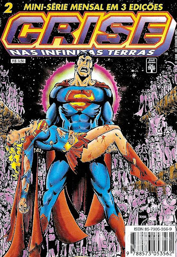
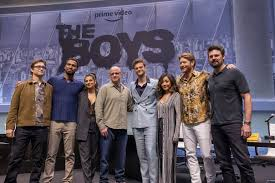
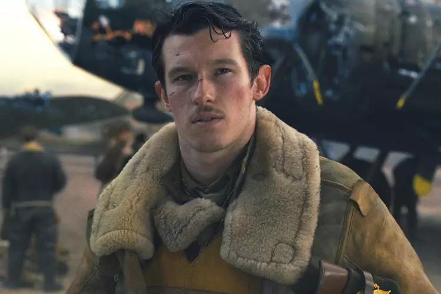
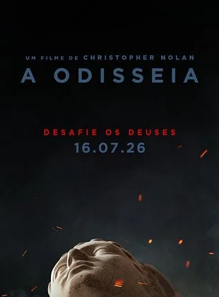
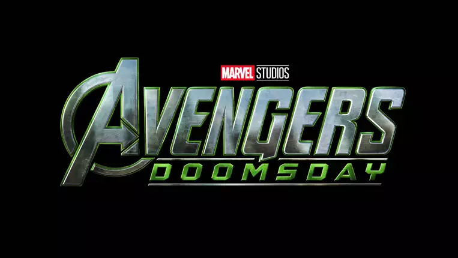
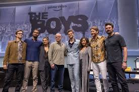
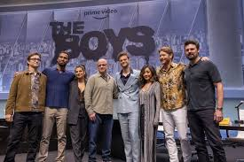

Peter Greene, famoso por "Pulp Fiction" e "O Máscara", foi encontrado morto aos 60 anos em seu apartamento no Lower East Side
14/12/2025
É uma notícia muito triste.
O ator Peter Greene, conhecido por papéis marcantes como o vilão Dorian Tyrell em "O Máscara" e o sádico Zed em "Pulp Fiction", faleceu aos 60 anos.
A morte foi confirmada pelo seu empresário, Gregg Edwards.
Ele foi encontrado em seu apartamento no Lower East Side, em Nova York, na sexta-feira, dia 12 de dezembro (de 2025).
A causa oficial da morte ainda não foi divulgada publicamente pelas autoridades, mas a polícia não suspeita de crime.
Peter Greene era conhecido por interpretar antagonistas intensos e deixa um legado de quase 100 produções em sua carreira, que se manteve ativa até recentemente.
Supergirl | Teaser trailer alcança 17 milhões de visualizações em apenas 2 dias
14/12/2025
É um grande sucesso!
Sim, a marca de 17 milhões de visualizações em apenas 2 dias é um indicativo da enorme repercussão que o primeiro teaser trailer de Supergirl (estrelado por Milly Alcock) alcançou em suas plataformas oficiais de lançamento, incluindo YouTube, X (Twitter) e outras redes sociais.
O trailer, que estreou em 11 de dezembro de 2025, gerou uma intensa discussão online e revelou detalhes importantes sobre o filme que faz parte do novo Universo DC (DCU) de James Gunn e Peter Safran.
Destaques do Teaser Trailer
O teaser trailer de Supergirl, baseado na aclamada HQ "Supergirl: Woman of Tomorrow" de Tom King e Bilquis Evely, confirmou o tom e a direção do filme:
Personagem Cínica: Milly Alcock (conhecida por House of the Dragon) apresenta uma Kara Zor-El mais cínica e "punk" do que o Superman, lutando contra demônios internos e carregando o peso de ter presenciado a destruição de Krypton.
Aventura Espacial: O filme é descrito como uma aventura espacial de anti-heroína, mostrando Kara em uma jornada vingança e justiça ao lado de uma jovem alienígena chamada Ruthye Marye Knoll.
Lobo Confirmado: O teaser também deu uma primeira olhada em Jason Momoa retornando ao universo da DC em um novo papel: o caçador de recompensas cósmico Lobo.
Estreia: O filme está previsto para estrear nos cinemas em 26 de junho de 2026.
A alta contagem de visualizações reflete o interesse do público na nova fase da DC e no retorno de Kara Zor-El às telonas.
O primeiro teaser trailer de Vingadores: Doomsday foi registrado recentemente e isso revelou a sua duração, gerando um grande hype (antecipação) entre os fãs
09/12/2025
Detalhes Confirmados (Teaser)
Duração Revelada: O teaser trailer registrado tem a duração de 1 minuto e 25 segundos.
Natureza do Vídeo: Este é considerado um Teaser Trailer (e não um trailer completo), o que faz sentido, já que o filme só será lançado no final de 2026.
Registro: O registro foi feito, segundo as fontes, por órgãos internacionais como o Conselho de Classificação de Mídia da Coreia do Sul.
Apesar de a duração estar confirmada, a data oficial de lançamento online ainda é um rumor, mas a expectativa é que ele seja lançado nesta próxima semana (meados de dezembro de 2025).
A Panini já confirmou um grande lançamento de Crise nas Infinitas Terras que está sendo associado à comemoração do seu 40º aniversário
09/12/2025

A Panini anunciou uma Assinatura Coleção Crise nas Infinitas Terras com um formato bastante extenso
Detalhes do Lançamento:
Formato: Uma grande coleção de 14 volumes.
Conteúdo: Irá muito além da minissérie principal de 12 edições, incluindo:
A saga principal de Crise nas Infinitas Terras.
Tie-ins/Histórias da Pré-Crise: Muitas histórias anteriores e adjacentes que servem como prelúdio ou complementam o evento.
Material Inédito no Brasil: Incluindo spin-offs da Crise.
Extras: História do Universo DC e extenso material de bastidores da produção do épico.
Lançamento Previsto: A previsão de envio dos volumes iniciais para os assinantes está para a segunda quinzena de maio de 2026.
Este é o formato mais completo da saga já anunciado pela Panini no Brasil e é a principal celebração da editora para o aniversário de 40 anos do evento.
2ª temporada de ‘My Hero Academia: Vigilantes’ ganha trailer e data de estreia
09/12/2025
Sobre Novo Trailer
O novo trailer foi lançado recentemente (em dezembro de 2025), confirmando a data de estreia e dando uma prévia intensa do que está por vir para o trio principal: The Crawler (Koichi Haimawari), Pop☆Step e Knuckleduster.
A segunda temporada promete intensificar a ação do spin-off que serve como prelúdio para a história principal de My Hero Academia.
Data de Estreia: A segunda temporada de My Hero Academia: Vigilantes será lançada em 5 de janeiro de 2026.
Onde Assistir: A nova temporada será transmitida no Brasil pela Crunchyroll.
Supergirl ganha primeiro teaser trailer
09/12/2025
O trailer apresenta um tom mais sombrio e pessoal para a heroína.
O teaser trailer do filme da Supergirl (Supergirl: Woman of Tomorrow) foi lançado. O material foi exibido na CCXP e traz Milly Alcock como a nova Kara Zor-El, em uma produção do DC Universe de James Gunn.
Detalhes do Teaser:
Atriz Principal: O filme é estrelado por Milly Alcock, conhecida por seu papel em A Casa do Dragão
Base da História: O enredo se baseia na aclamada HQ "Supergirl: Mulher do Amanhã" (Woman of Tomorrow), de Tom King
Cena de Abertura: A prévia foca no estado de Kara, diferente do heroísmo imediato de Superman. Ela é vista com "cara de chapada" e de ressaca em um ponto de ônibus, buscando um propósito na vida após a destruição de Krypton
Visual: A personagem aparece com um visual mais "desleixado," incluindo calças rasgadas e um sobretudo, em linha com a abordagem da HQ
Logo: O teaser é finalizado com o novo logo da Supergirl, que usa um design semelhante ao do Superman, mas apresenta cores diferentes e um estilo que remete a néon ou grafite
A série da Marvel Studios, chamada Magnum (ou Wonder Man no original), teve um painel na CCXP onde exibiu cenas inéditas e um novo trailer/teaser
07/12/2025
Destaques da Apresentação de Magnum na CCXP
Conteúdo Exibido: Foi exibido um novo trailer (ou teaser estendido) e, em alguns relatos, uma cena completa da série.
Enredo: O material focou em Simon Williams (o Magnum, interpretado por Yahya Abdul-Mateen II), um aspirante a ator, e no retorno de Trevor Slattery (Ben Kingsley), que o ajuda em sua busca por estrelato.
Tom da Série: A prévia confirmou o tom de comédia e sátira a Hollywood, com muita ironia e humor leve.
Detalhe da Cena: Uma das cenas descritas mostra Simon e Trevor se encontrando com um diretor para um remake de um filme de super-heróis.
A série Magnum está programada para estrear no Disney+ em janeiro de 2026.
Netflix anuncia compra da Warner Bros
05/12/2025
A empresa afirma que manterá as operações atuais da Warner Bros., incluindo os lançamentos nos cinemas
Valor do Acordo: Os valores divulgados variam, mas o negócio está avaliado em cerca de US$ 72 bilhões a US$ 83 bilhões, incluindo dívidas.
O que está incluído: A Netflix adquirirá os tradicionais estúdios de cinema e TV da Warner Bros. e o serviço de streaming HBO Max, que inclui o prestigioso catálogo da HBO e franquias como Harry Potter, DC Comics (Batman, Superman, etc.), Friends, Game of Thrones, O Senhor dos Anéis, entre outros.
O que FICA de FORA: A transação não inclui a divisão de canais a cabo da WBD (como CNN, TNT, TBS e Discovery), que será desmembrada em uma nova empresa chamada "Discovery Global".
Próximos Passos: O acordo já foi aprovado pelos conselhos das duas empresas, mas ainda depende da conclusão da separação da divisão de canais e de aprovações regulatórias (antitruste), o que pode levar de 12 a 18 meses, com previsão de fechamento após o terceiro trimestre de 2026.
Futuro da HBO Max: A Netflix indicou que pretende potencializar a marca HBO e centralizar o catálogo no seu próprio serviço de streaming.
Essa é considerada uma aquisição histórica que deve mudar radicalmente o cenário do entretenimento global.
A CCXP 2025 (Comic Con Experience) de São Paulo, o maior festival de cultura pop do mundo
04/12/2025
Destaques da Programação e Atrações
A CCXP é um evento multifacetado que reúne fãs de diversas áreas da cultura pop. Os destaques desta edição incluíram:
Timothée Chalamet (em painel dedicado ao filme Marty Supreme).
Elenco de The Boys (incluindo Erin Moriarty, Colby Minifie, Karen Fukuhara, Tomer Capone e Laz Alonso).
Celebração de 20 anos de Supernatural com os atores Misha Collins, Kathryn Newton, Jim Beaver, Richard Speight Jr. e Rob Benedict.
Tom Wlaschiha (Game of Thrones e Stranger Things).
Dominic Monaghan (Lost e O Senhor dos Anéis).
Participações de elencos de séries como Fallout e It: Bem-vindos à Derry.
Artistas e Quadrinistas: A tradicional área Artists' Valley contou com a presença de mais de 450 artistas.

Outras Atrações:
Painel em homenagem aos 90 anos de Mauricio de Sousa.
Palcos temáticos (Palco Thunder, Palco Omelete, Palco Creators & Gamers, Palco Magic) com shows, palestras, pré-estreias e competições.
Espaços para Cosplay (Cosplay Universe), Games, Colecionáveis e experiências imersivas de estúdios de cinema e TV.
Sessões de Fotos e Autógrafos com os artistas convidados.
O que é a CCXP?
A Comic Con Experience (CCXP) é um festival brasileiro de cultura pop, originalmente inspirado na San Diego Comic-Con, mas que se tornou o maior evento Comic Con do mundo em público.
O festival cobre as principais áreas da indústria do entretenimento, como:
Filmes e Séries de TV (incluindo painéis de lançamentos e pré-estreias)
Histórias em Quadrinhos (HQs)
Vídeo Games e eSports
Literatura
Animação (Animes) e Dublagem
Cosplay
É um evento focado em proporcionar uma experiência imersiva para os fãs, reunindo estúdios, celebridades e criadores de conteúdo em um único lugar.
O Retorno dos Criadores de Miles Morales!
03/12/2025
No mundo dos quadrinhos é o retorno da dupla que criou o icônico Miles Morales para um novo projeto na Marvel Comics!
Embora a Marvel e a dupla ainda não tenham confirmado oficialmente que o novo projeto será sobre Miles Morales, todas as expectativas e rumores apontam fortemente para isso.
O Anúncio: O retorno da dupla à Marvel foi anunciado durante a Milan Games Week & Cartoomics, no final de novembro de 2025.
A Pista: O próprio Brian Michael Bendis confirmou que ele e Sara Pichelli estão trabalhando juntos em um projeto na Marvel com lançamento previsto para 2026.
A Especulação: Dado que eles são os co-criadores de Miles Morales (que estreou em Ultimate Fallout #4 em 2011) e a dupla que melhor entende a essência original do personagem, os fãs e a imprensa especializada acreditam que este será um retorno ao herói que o consagrou.
Muitos críticos e leitores sentem que, desde que Miles foi integrado ao Universo Marvel principal (Terra-616) em 2015, parte da identidade única e do foco do personagem se diluíram. O retorno de Bendis e Pichelli é visto como uma oportunidade de revisitar o espírito original do Ultimate Spider-Man.
The Witcher 4: Data de Lançamento e Planos da Trilogia
02/12/2025
Essa informação é uma confirmação da CD Projekt Red (CDPR) e resume bem os planos ambiciosos do estúdio para o futuro da franquia The Witcher.
Aqui estão os pontos-chave mais recentes, confirmados em uma reunião de investidores:
The Witcher 4 não será lançado em 2026: O co-CEO, Michał Nowakowski, confirmou que o primeiro jogo da nova saga, conhecido internamente como "Project Polaris", não será lançado no próximo ano (2026). Embora não tenha dado uma data exata, a expectativa do mercado agora se move para 2027 ou 2028.
Trilogia em 6 Anos: O plano mais ambicioso e reforçado pela CDPR é o de lançar os três jogos da nova saga (The Witcher 4, 5 e 6) dentro de um período de seis anos após o lançamento do primeiro título.
Motivação para Aceleração: A CDPR acredita que esse cronograma acelerado é possível porque o trabalho de base em The Witcher 4 (que está sendo desenvolvido na Unreal Engine 5) criará um alicerce tecnológico sólido. Isso permitirá que os jogos subsequentes da trilogia sejam desenvolvidos de forma mais rápida e eficiente.
Status Atual: The Witcher 4 está atualmente em fase de produção, com uma equipe de mais de 450 desenvolvedores trabalhando no projeto.
O foco da CD Projekt Red agora é usar a Unreal Engine 5 para otimizar o desenvolvimento de futuros títulos, o que pode justificar a ambição de lançar uma trilogia completa em um período tão curto.
Diretor James Cameron critica uso de IA para criação de atores
30/11/2025
Essa é uma crítica que tem grande peso, especialmente vindo de James Cameron
Em uma entrevista, Cameron foi direto ao traçar a linha entre o uso de tecnologia como ferramenta e a substituição da arte humana:
A Posição Dele: Ele fez uma distinção clara entre o uso de captura de movimento (como ele faz em Avatar) — que ele vê como uma "celebração do momento entre ator e diretor" — e a IA Generativa.
O "Não" Categórico: Sobre a IA generativa, que "pode criar um personagem, criar um ator, criar uma performance do nada a partir de uma sugestão em texto", ele declarou:
"É um grande não para mim. É assustador. É o completo oposto. Isso é exatamente o que não iremos fazer."
A Importância da Experiência Humana: Para Cameron, o essencial da arte é a perspectiva particular, a experiência vivida única de um ser humano – seja no roteiro, na direção ou na atuação. Ele acredita que a IA não pode replicar essa alma.
Callum Turner pode ser o novo James Bond nas telonas
30/11/2025

Ator é conhecido por filmes como Animais Fantásticos e Sala Verde, além do novo Eternidade
O ator britânico Callum Turner realmente emergiu como um dos favoritos para ser o novo James Bond, segundo reportagens de jornais ingleses, como o The Telegraph, e a movimentação nas casas de apostas.
O Contexto: O projeto de um novo filme de 007, após a saída de Daniel Craig, está sendo desenvolvido pela Amazon MGM com Denis Villeneuve como diretor.
O Perfil Buscado: Há rumores de que o novo filme será um "reboot" e mostrará uma fase mais inexperiente de Bond, com o estúdio buscando um ator na faixa dos 30 anos (embora Turner tenha cerca de 37 anos).
Concorrência: Turner, conhecido por seus papéis em Animais Fantásticos, Mestres do Ar e The Boys in the Boat, superou outros nomes que vinham sendo cotados há tempos, como Aaron Taylor-Johnson. Outros atores jovens como Tom Holland, Jacob Elordi e Harris Dickinson também foram mencionados em listas de desejos da Amazon.
No entanto, é importante ressaltar que, até o momento, a escolha não foi oficializada pela EON Productions ou pela Amazon.
Percy Jackson e os Olimpianos ganhará novo livro em 2026
29/11/2025
A editora Intrínseca já confirmou o lançamento do novo livro no Brasil. Aqui estão os detalhes:
Título: O Tribunal dos Mortos (The Court of the Dead)
Protagonistas: Nico Di Angelo e seu namorado Will Solace (o shipp "Solangelo").
Coautoria: O livro é escrito por Rick Riordan em parceria com Mark Oshiro.
Lançamento no Brasil: A previsão é para Janeiro de 2026.
Este livro é a sequência de O Sol e a Estrela: Uma Aventura de Nico Di Angelo. Na trama, Nico, Will e Hazel Levesque se envolvem em uma missão para conter seres míticos que escaparam do Mundo Inferior após um incidente no Acampamento Júpiter.
A Odisseia terá prévia de 5 minutos em IMAX em dezembro
28/11/2025

Para os fãs do trabalho de Christopher Nolan e do formato IMAX!
O filme em questão é A Odisseia (The Odyssey), a épica adaptação do poema de Homero dirigida por Christopher Nolan, que tem sua estreia prevista para 16 de julho de 2026 no Brasil.
Prévia IMAX de 5 Minutos
O Que é: O público terá a oportunidade de ver uma prévia estendida de cinco minutos do filme, filmada inteiramente no formato IMAX 70mm.
Quando e Onde: Esta prévia será exibida a partir de dezembro de 2025 nos Estados Unidos, durante as reexibições de filmes clássicos que também foram rodados em IMAX, como Pecadores e Uma Batalha Após a Outra (títulos de filmes que Nolan gosta de citar em referência a seus colegas).
A Estratégia de Nolan
Christopher Nolan é um dos maiores defensores da experiência cinematográfica, especialmente no formato IMAX. A decisão de exibir um trecho tão longo e com tanta antecedência (o filme só estreia em julho de 2026) faz parte de sua estratégia para garantir que o público veja o material na melhor qualidade possível.
Mega-Trailer: Além da prévia de 5 minutos, Nolan também preparou um trailer especial para ser exibido junto com o aguardado Avatar 3: Fogo e Cinzas, o que garantirá uma exposição massiva nas salas de cinema.
Filmado 100% em IMAX: A Odisseia é o primeiro longa-metragem de Nolan a ser filmado inteiramente com câmeras IMAX 70mm, o que sugere um investimento visual e imersivo inédito em sua carreira.
Vingadores: Doomsday - Robert Downey Jr. posta foto de Dr. Destino e Tony Stark
27/11/2025
Ator publicou a foto em homenagem ao Dia de Ação de Graças
A imagem em questão mostra o Doutor Destino e o Homem de Ferro (Tony Stark) segurando um "osso da sorte" (wishbone). A publicação foi feita na quinta-feira, dia 28 (que, de acordo com o contexto, coincidia com o feriado de Ação de Graças nos EUA), e a imagem parece ser uma brincadeira do ator com os dois personagens que ele interpreta no contexto das festividades.
O Doutor Destino será o principal vilão de Vingadores: Doomsday, e há rumores e especulações de que Robert Downey Jr. possa interpretá-lo. A presença de Tony Stark e Doutor Destino na mesma imagem levantou a suspeita de um possível confronto entre os dois personagens ou de uma conexão, como a de que o Doutor Destino poderia ser uma variante de Tony Stark. No entanto, o próprio ator já sugeriu que o Doutor Destino não será uma variante de Stark, e sim um "passo à frente" em sua carreira, e que a semelhança seria usada como um artifício dramático.

Detalhes adicionais sobre Vingadores: Doomsday:
Elenco: O filme está sendo construído para ser uma das maiores reuniões de astros do MCU, incluindo retornos de personagens das fases anteriores (Thor, Capitão América/Sam Wilson, Homem-Formiga, Soldado Invernal) e personagens introduzidos nas fases 4 e 5 (Shang-Chi, Falcão/Joaquin Torres, o novo Quarteto Fantástico, e o elenco de Thunderbolts*).
Surpresas: O anúncio do elenco também trouxe a surpresa do retorno dos X-Men clássicos dos filmes da Fox, como Professor X (Patrick Stewart), Magneto (Ian McKellen), Ciclope (James Marsden) e Mística (Rebecca Romijn).
Data de Estreia: A previsão de estreia nos cinemas é para 30 de abril de 2026, seguido por Vingadores: Guerras Secretas em maio de 2027.
It: Bem-Vindos a Derry Episódio 5 traz Pennywise
24/11/2025
O palhaço Pennywise (interpretado por Bill Skarsgård) finalmente faz a sua primeira aparição completa e dramática na série
O episódio é focado na infame casa da Rua Neibolt, que serve como entrada para o covil da criatura, e usa a tática clássica de A Coisa para atrair os personagens.
O Retorno do Palhaço: A criatura atrai o grupo de jovens para o esgoto, revelando-se de forma assustadora ao se transformar.
O Engano: Pennywise usa a imagem de uma vítima anterior que se acreditava ter sobrevivido para conduzir o grupo diretamente para sua toca.
Transformações: Além da forma de palhaço, a entidade se manifesta em outras formas para aterrorizar individualmente os personagens, como uma versão do Tio Sam e ilusões de familiares.
A série é um prelúdio dos filmes It: A Coisa (2017) e It: Capítulo Dois (2019) e tem oito episódios, sendo lançada semanalmente na HBO e HBO Max.
Morre Jimmy Cliff
24/11/2025
O cantor e ícone do reggae Jimmy Cliff faleceu nesta segunda-feira, 24 de novembro de 2025, aos 81 anos.
A informação foi divulgada pela sua esposa, Latifa, por meio das redes sociais, indicando que a causa da morte foi uma convulsão seguida por pneumonia.
Jimmy Cliff foi uma lenda do reggae, sendo fundamental na popularização do gênero jamaicano em todo o mundo, com sucessos como "Many Rivers to Cross", "I Can See Clearly Now" e "Reggae Night".
Primeiro Trailer de 'Jogos Vorazes: Amanhecer na Colheita' Divulgado!
23/11/2025
Adaptação será lançada daqui a um ano nos cinemas
Que notícia eletrizante! O primeiro trailer oficial de "Jogos Vorazes: Amanhecer na Colheita" (título original: The Hunger Games: Sunrise on the Reaping) foi lançado recentemente, aumentando a expectativa dos fãs para o novo filme da saga.
Personagem Central: O filme acompanha a jornada do jovem Haymitch Abernathy (interpretado por Joseph Zada), 24 anos antes dos eventos de Katniss Everdeen.
O Evento: A trama se passa durante o Segundo Massacre Quaternário, a 50ª edição dos Jogos Vorazes, onde o dobro de tributos (48 no total) é enviado de cada distrito para a arena.
Data de Estreia: A estreia nos cinemas está marcada para 20 de novembro de 2026.
Elenco: O elenco conta com nomes de peso como Elle Fanning (como uma jovem Effie Trinket), Kieran Culkin (como Caesar Flickerman), Jesse Plemons (como Plutarch Heavensbee), Glenn Close, e Ralph Fiennes como o Presidente Coriolanus Snow.
Direção: A direção é de Francis Lawrence, que já comandou a maior parte dos filmes da franquia, incluindo A Cantiga dos Pássaros e das Serpentes.
A Odisseia: Filme de Christopher Nolan
20/11/2025
O novo projeto de Christopher Nolan é o filme épico de ação e fantasia intitulado "A Odisseia" (título original: The Odyssey).
O filme é uma adaptação cinematográfica da famosa epopeia grega de Homero, que narra a longa e perigosa jornada de Odisseu (Ulisses), o rei de Ítaca, em sua tentativa de retornar para casa após o fim da Guerra de Troia, enfrentando deuses e criaturas míticas.
O filme já está gerando grande expectativa, com relatos de que a pré-venda de ingressos para as primeiras sessões IMAX nos EUA esgotou com mais de um ano de antecedência.
O filme conta com um elenco estelar, com muitos colaboradores frequentes de Nolan:
Matt Damon,Anne Hathaway,Tom Holland,Charlize Theron,Robert Pattinson e Zendaya
A data de lançamento nos cinemas do Brasil: Data Prevista 16 Julho de 2026
O filme "Star Wars: O Mandaloriano e Grogu" tem estreia prevista para maio de 2026
17/11/2025
Elenco Principal
Pedro Pascal como Din Djarin / O Mandaloriano: O caçador de recompensas mandaloriano e protagonista da história.
Nota: O personagem também é interpretado pelos dublês Brendan Wayne e Lateef Crowder em algumas cenas.
Grogu: O "pupilo" do Mandaloriano, um bebê da mesma espécie de Yoda, criado com uma combinação de animatrônicos, marionetes e efeitos visuais.
Sigourney Weaver (Papel não revelado inicialmente, mas rumores e fontes apontam que ela interpretará uma piloto veterana da Aliança Rebelde).
Jeremy Allen White (Voz de Rotta the Hutt): O filho do senhor do crime Jabba the Hutt, que no filme será um gladiador.
Jonny Coyne como um Senhor da Guerra Imperial.
É provável que outros atores da série The Mandalorian, como Katee Sackhoff (Bo-Katan Kryze), Giancarlo Esposito (Moff Gideon) e Emily Swallow (A Armeira), também possam retornar, mas ainda não há confirmações oficiais de seus papéis no filme.z
Avatar: Fogo e Cinzas (Avatar 3) será o filme mais longo da franquia até o momento.
12/11/2025
A duração esperada do filme é de cerca de 3 horas e 15 minutos (195 minutos).Para fins de comparação, as durações dos filmes anteriores são:
Avatar (2009): 2 horas e 42 minutos
Avatar: O Caminho da Água (2022): 3 horas e 12 minutos
O próprio diretor, James Cameron, já havia confirmado que o terceiro filme seria "um pouco mais longo" do que o segundo. O lançamento de Avatar: Fogo e Cinzas está programado para dezembro de 2025.
Toy Story 5 ganha novo trailer
12/11/2025
Lançamento: O filme está programado para estrear em 18 ou 19 de junho de 2026 nos cinemas brasileiros.
Retornos Confirmados: O teaser mostra o retorno de Woody, Buzz Lightyear, Jessie e outros amigos, como Garfinho (Forky) e a Sra. e Sr. Cabeça de Batata.
Nova Vilã: A grande novidade é a introdução de Lily Pad, um tablet inteligente em formato de sapo que se torna a nova antagonista.
Tema Central: A trama irá abordar o impacto da tecnologia e das telas na infância, questionando se "A era dos brinquedos acabou?" em um mundo cada vez mais digital.
ONE PIECE - Mensagem misteriosa para fãs; saiba o que significa
11/11/2025
A mensagem misteriosa enviada pela Netflix para os fãs de One Piece: A Série estava em Código Morse e continha uma referência direta a um dos principais conceitos da Marinha no universo da obra.
O significado da mensagem é:"Justiça Absoluta" (Absolute Justice)
A mensagem, que foi enviada em um grupo de fãs do live-action, estava grafada em Código Morse e foi acompanhada de várias mensagens sobre a Marinha ter assumido o controle do grupo. A tradução do código é:
Conteúdo do Código Morse: O código se traduzia como "ABSMLUTE JUSTICE".
Significado: Apesar de um provável erro de digitação no código (M no lugar do O), a intenção é clara: Justiça Absoluta (Absolute Justice).
Contexto: Este é o lema central da Marinha em One Piece, representando a crença de que qualquer meio é válido para impor a lei e eliminar a pirataria, o que muitas vezes a coloca em conflito moral com os Piratas do Chapéu de Palha.
A mensagem misteriosa serviu como o pontapé inicial para o anúncio da "Marine Week" (Semana da Marinha), sugerindo que a Netflix focará a campanha promocional seguinte no núcleo da Marinha, que ganhará uma relevância ainda maior na segunda temporada.
Essa campanha misteriosa provavelmente está relacionada à próxima temporada, que terá o arco de Loguetown e apresentará novos personagens importantes da Marinha, como o Capitão Smoker e a Tashigi.
O primeiro trailer da cinebiografia "Michael", sobre a vida do Rei do Pop, Michael Jackson, se tornou o mais assistido na história do gênero.
09/11/2025
Michael tem estreia agendada para os cinemas em 23 de abril de 2026
Total de Visualizações: O trailer acumulou mais de 116,2 milhões de visualizações em suas primeiras 24 horas de lançamento global.
Recorde Histórico: Isso o torna o trailer mais visto de qualquer cinebiografia musical ou filme-concerto de todos os tempos.
Recorde Anterior: O recorde anterior era detido pelo trailer de "Taylor Swift: The Eras Tour", que alcançou 96,1 milhões de visualizações no mesmo período.
Protagonista: Jaafar Jackson, sobrinho do cantor (filho de Jermaine Jackson), que interpreta Michael Jackson com uma semelhança e performance muito elogiadas.
Direção: Antoine Fuqua (Dia de Treinamento, O Protetor).
Produção: Graham King (o mesmo produtor de Bohemian Rhapsody).
Previsão de Estreia: Abril de 2026 (nos cinemas).
Stranger Things - Assista aos 5 primeiros minutos da última temporada
07/11/2025
A Netflix divulgou os cinco primeiros minutos do primeiro episódio da 5ª e última temporada de Stranger Things, e a cena traz uma grande revelação sobre o início da saga e a conexão de Will Byers com o Mundo Invertido e Vecna.
Vingadores: Doomsday - Primeiro trailer já tem data para lançamento
06/11/2025
Filme chega aos cinemas em 2026
O primeiro trailer de Vingadores: Doomsday (Vingadores 5) deve ser lançado junto com outro grande blockbuster da Disney:
Lançamento do Trailer: 18 ou 19 de Dezembro de 2025
Acompanhando o Filme: O trailer será exibido nos cinemas antes das sessões de Avatar: Fogo e Cinzas (Avatar 3), que tem estreia marcada para 19 de dezembro de 2025.
Esta estratégia de anexar trailers de grandes projetos a outros sucessos de bilheteria da mesma distribuidora (Disney, neste caso) é comum no mercado.
A Múmia ganhará novo filme com Brendan Fraser e Rachel Weisz
06/11/2025
A informação de que Brendan Fraser e Rachel Weisz retornarão para um novo filme da saga é bastante forte, mas ainda está na fase de negociações e rumores de bastidores, sem uma confirmação oficial da Universal Pictures.
O Status do Novo Filme
Negociações: Múltiplas fontes de Hollywood, como o The Hollywood Reporter e a Variety, relatam que Brendan Fraser (Rick O'Connell) e Rachel Weisz (Evelyn Carnahan O'Connell) estão em negociações para reprisar seus papéis.
Direção: O filme será dirigido pela dupla Radio Silence (Matt Bettinelli-Olpin e Tyler Gillett), conhecidos por revitalizarem a franquia Pânico e dirigirem Casamento Sangrento.
Sequência, Não Reboot: O projeto estaria sendo tratado como uma continuação (A Múmia 4), e não um reboot, e deve ignorar os eventos do terceiro filme da franquia, A Múmia: Tumba do Imperador Dragão (2008), que não contou com Rachel Weisz.
Retorno aos Filmes de Aventura: A intenção é resgatar o tom de ação, comédia e aventura dos primeiros filmes, que foi um dos fatores de seu sucesso.
A volta de Brendan Fraser, especialmente após seu "renascimento" na carreira e a vitória no Oscar por A Baleia, tem sido um desejo constante dos fãs e um grande atrativo para a Universal Pictures.
Aguardamos o anúncio oficial, mas as expectativas são altas para ver o casal Rick e Evelyn de volta às telas!
Morrissey cancela show no Brasil e toda a turnê pela América Latina
05/11/2025
O cantor Morrissey cancelou o show que faria em São Paulo e, consequentemente, suspendeu toda a sua turnê pela América Latina. O show no Brasil estava agendado para o dia 12 de novembro no Espaço Unimed.
Motivo do Cancelamento
A produtora Move Concerts, responsável pelo evento, divulgou um comunicado oficial informando que o cancelamento se deu por:"Extremo esgotamento do artista"
Este é um motivo que já foi alegado pelo ex-vocalista do The Smiths em ocasiões anteriores.
Infelizmente, este é mais um capítulo de uma longa lista de cancelamentos envolvendo a vinda de Morrissey ao Brasil. Essa seria a quarta vez que shows dele são cancelados ou adiados no país, incluindo as datas de 2013, 2023 (adiada e depois cancelada) e 2024.
Predador Novo filme pode ter volta de Arnold Schwarzenegger como Dutch
25/11/2025
Essa notícia está circulando com força e o retorno de Arnold Schwarzenegger como Dutch ao universo Predador é um desejo real e em negociação, embora ainda não esteja totalmente confirmado para o próximo filme live-action.
Retorno Confirmado... na Animação
Arnold Schwarzenegger (Dutch Schaefer) já retornou de forma canônica (ou seja, estabelecendo uma ligação oficial com a história):
Onde: No filme de animação "Predador: Assassino de Assassinos" (Predator: Killer of Killers), lançado no Disney+.
O Que Aconteceu: Uma versão estendida da cena final da animação mostra Dutch (Arnold Schwarzenegger) e Mike Harrigan (Danny Glover, de Predador 2) sendo mantidos em cápsulas de criogenia por um clã de Predadores.
Essa participação, que teve a aprovação do próprio Schwarzenegger, estabelece o que aconteceu com Dutch e abre a porta para seu retorno em live-action.
Conversas para o Filme Live-Action
Os rumores sobre o retorno de Dutch no próximo filme live-action são alimentados por conversas reais:
O Filme: O próximo filme é "Predador: Terras Selvagens" (Predator: Badlands), dirigido por Dan Trachtenberg (O Predador: A Caçada).
As Conversas: Ben Rosenblatt, produtor de Terras Selvagens, confirmou conversas com Arnold Schwarzenegger sobre seu possível retorno. O próprio diretor, Dan Trachtenberg, teve reuniões com o ator para discutir a inclusão de Dutch no futuro da franquia.
O Desejo do Estúdio: O produtor chegou a dizer que trazer Arnold de volta seria o "Santo Graal" dos filmes do Predador.
Embora haja um grande interesse e conversas em andamento, o retorno de Dutch Schaefer para a trama principal de "Predador: Terras Selvagens" ainda não tem um contrato fechado ou um anúncio oficial, mas é o que os produtores e fãs mais desejam.
Frankenstein, de Guillermo del Toro, ganha data de estreia nos cinemas e na Netflix
23/10/2025
O novo filme de Guillermo del Toro, uma adaptação do clássico Frankenstein, já teve suas datas de estreia confirmadas tanto nos cinemas quanto na Netflix.O filme faz parte de uma estratégia de lançamento da Netflix que garante uma exibição limitada nos cinemas para qualificá-lo para a temporada de prêmios (como o Oscar).
O filme teve sua estreia mundial um pouco antes, no Festival de Veneza, em 30 de agosto de 2025.
IT: Bem-Vindos a Derry
27/10/2025
A série "IT: Bem-Vindos a Derry" é o aguardado prelúdio dos filmes de IT: A Coisa e já está sendo exibida no Brasil!
É um dos grandes lançamentos de terror de 2025 e aprofunda a mitologia criada por Stephen King.
Status de Lançamento e Transmissão
Estreia: A série estreou na HBO e na plataforma HBO Max no dia 26 de outubro de 2025.
Transmissão: Os novos episódios são lançados semanalmente, aos domingos, no mesmo horário.
Episódios: A primeira temporada terá oito episódios, com previsão de encerramento em 14 de dezembro de 2025.
Zorin OS 18 atrai multidão de ex-usuários do Windows
17/10/2025
O Zorin OS há tempos se destaca entre as distribuições Linux mais
acessíveis para quem vem do Windows. Baseado no Ubuntu e conhecido
pelo visual polido e familiar, o sistema sempre teve como meta
oferecer uma transição suave para o mundo open source. Mas a versão
mais recente, o Zorin OS 18, conseguiu algo que poucas distros já
alcançaram: atenção em massa.
Recorde de Lançamento
100.000 Downloads: O Zorin OS 18 atingiu a marca de 100 mil downloads em apenas 48 horas, estabelecendo o maior lançamento na história do projeto.
Maioria do Windows: O dado mais impressionante é a origem dos novos usuários: quase três em cada quatro downloads (cerca de 72%) vieram de ex-usuários do Windows.
O Zorin OS 18, portanto, se posicionou como a alternativa ideal para quem precisa de um sistema operacional moderno, seguro, gratuito e que funcione bem até mesmo em computadores mais antigos.
Predador: Terras Selvagens
28/10/2025
Novo filme da franquia estreia em novembro deste ano nos cinemas
Predador: Terras Selvagens (Predator: Badlands) é o novo filme da franquia Predador, e ele já estreou nos cinemas brasileiros no início deste mês!
O filme é a primeira sequência após o sucesso de O Predador: A Caçada (2022) e tem uma abordagem única que inverte a dinâmica tradicional da saga.
Trama e Sinopse Invertida
A grande novidade deste filme é que o Predador não é o vilão principal, mas sim um protagonista em uma jornada de sobrevivência.
A Nova Dinâmica: A história se passa em um futuro distante em um planeta remoto e hostil chamado Genna (o "Planeta da Morte").
Protagonista: O foco é Dek (Dimitrius Schuster-Koloamatangi), um jovem Predador (Yautja) que é exilado por seu clã, que o considera fraco. Para provar seu valor, ele embarca em uma caçada solitária contra uma criatura suprema e regenerativa chamada Kalisk.
A Aliada Humana: Dek forma uma aliança improvável e relutante com Thia (Elle Fanning), uma sintética (andróide) danificada da Corporação Weyland-Yutani (fazendo uma clara conexão com a franquia Alien). Thia se junta a ele para rastrear o Kalisk em troca de ajuda para recuperar suas peças.
A narrativa explora o conceito de Predadores como párias e usa a figura corporativa da Weyland-Yutani como a verdadeira ameaça, resgatando temas do universo Alien.
Entrevista Com o Vampiro - Terceira temporada tem data de lançamento revelada
11/10/2025
Em meio aos lançamentos e novidades anunciados durante a New York Comic Con, a data de estreia da terceira temporada de Entrevista Com o Vampiro parece ter sido revelada, mas não nos palcos do evento.
A roteirista Anusree Roy, que faz parte do quadro de roteiristas da nova temporada da série, publicou em seu Instagram um story divulgando o lançamento do trailer. Na legenda, ela escreveu: "Que jornada maluca escrever para essa série! Abril de 2026!"
Crise na Microsoft: Game Pass tem uma das assinaturas praticamente dobrada
10/10/2025
O aumento de preço do Xbox Game Pass, que resultou no plano mais completo do serviço se tornando uma das assinaturas mais caras do mercado brasileiro de entretenimento.Essa mudança, que começou a ser aplicada em outubro de 2025, gerou uma forte reação dos consumidores e levou a muitos debates sobre a sustentabilidade do serviço.
Esse reajuste representa um aumento de quase 100% (99,8%), tornando a mensalidade do Game Pass Ultimate a mais alta entre os principais serviços de assinatura de jogos e vídeo no país.
O Contexto da "Crise"
A Microsoft justificou o aumento com a expansão da oferta (especialmente com a inclusão de Ubisoft+ Classics e o Clube Fortnite no Ultimate) e o aumento dos custos operacionais.
No entanto, a magnitude do reajuste, que foi muito maior no Brasil do que em outros mercados (onde o aumento foi de cerca de 50%), gerou as críticas de "crise" e levou muitos usuários a buscar o cancelamento em massa do serviço.


 
